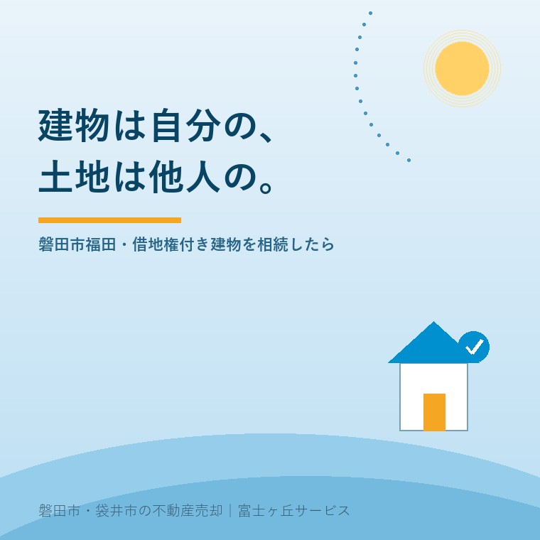

2026年8月19日｜カテゴリ：地域と不動産／相続・名義

この記事の要点
Q. 親が亡くなって実家を相続したのですが、家は親の名義なのに、土地は近所の方の名義でした。地代を毎年払っていたようです。これ、売れるんでしょうか。
A. 売れます。ただし、原則として地主（借地権設定者）の承諾が要ります。建物を第三者に譲るとき、その土地を使う権利も一緒に移るからです。もし地主が不利になるおそれがないのに承諾しないときは、裁判所に「承諾に代わる許可」を求めることができます（借地借家法19条1項）。まず確認するのは①借地契約書があるか ②建物の登記が親の名義で入っているか ③地代をいつ、いくら、誰に払ってきたかの3つです。とくに②は重要で、借地権は、その登記がなくても、借地権者が登記されている建物を所有していれば第三者に対抗できます（同法10条1項）。相続した時点であわてて地主に何かを申し出る必要はありません。相続による承継は、譲渡とは別のものだからです。磐田市・袋井市では、介護施設の運営から不動産事業を始めた富士ヶ丘サービスのような「介護×不動産」専門の会社に相談するという選択肢があります。
磐田市の南、福田のあたりを歩くと、家と家がぴたりと寄り添った古い町並みが残っています。太田川の河口に近く、遠州灘からの風を防ぐように、屋敷は身を寄せ合って建っています。
こうした古い集落には、ときどき「建物は自分のもの、土地は他人のもの」という土地があります。戦前、あるいは戦後まもなくの時期に、地主から土地を借りて家を建てた。以来、二代、三代にわたって地代を払いながら住み続けてきた。借地です。
相続の相談で、固定資産税の通知書を拝見していて気づくことがあります。「家屋」の欄はあるのに、「土地」の欄が見当たらない。あるいは、通帳に毎年決まった時期の、決まった額の振込が残っている。そこで初めて、ご家族が「うちは借地だったのか」と知る。珍しいことではありません。
今日は、借地の上に建つご実家を相続したときに、何を確認し、どういう順番で考えればよいかを整理します。制度は、2026年8月19日時点で公表されている法令と裁判所の説明に沿って書きます。
借地権とは、建物を所有することを目的とする土地の賃借権、または地上権のことです。ご実家の敷地を、地主から借りている。その借りる権利が借地権です。
ここで大事なのは、建物はご自分（相続人）のものだということです。借りているのは土地だけで、建物はまぎれもなくご家族の財産です。だから、建物は相続の対象になりますし、売ることもできます。
そして借地権そのものにも、財産としての価値があります。「土地は他人のものだから、うちには何もない」と思い込んで、ご実家をただ同然で手放してしまう。これがいちばんもったいない誤解です。
借地借家法10条1項には、こう定められています。
借地権は、その登記がなくても、土地の上に借地権者が登記されている建物を所有するときは、これをもって第三者に対抗することができる。
つまり、建物が自分の名義で登記されていれば、それだけで借地権を主張できるということです。土地の登記簿に借地権の登記が入っていなくても構いません。古い借地では、賃借権の登記まで入っていることのほうがまれです。
逆に言えば、建物の登記が亡くなった親御さん、あるいはさらに前の世代の名義のままだと、この守りが弱くなります。相続登記をしておく理由は、ここにもあります。
なお、建物が火災などで滅失した場合でも、建物を特定する事項・滅失した日・新たに建てる旨を土地の見やすい場所に掲示すれば、対抗力は保たれます。ただし、滅失の日から2年を過ぎた後は、その前に建物を新築して登記した場合に限られます（同条2項）。空き家を解体してから長く放置することの意味は、ここでも変わってきます。
借地の相談は、書類が出てくるかどうかで進み方がまるで違います。ご実家に行かれたとき、次のものを探してみてください。
| 探すもの | そこから分かること |
|---|---|
| 土地賃貸借契約書 | いつ設定されたか、期間、地代、更新の取り決め、建替えや譲渡の承諾条項 |
| 建物の登記事項証明書・権利証 | 建物が誰の名義か、いつ新築されたか、抵当権が残っていないか |
| 地代の領収証・振込の記録 | 地主が誰か、いくら払ってきたか、いつから払っているか |
| 固定資産税の通知書 | 家屋だけが課税されているか。土地の記載の有無 |
| 更新料・承諾料を払った記録 | 過去の更新時期、地主との取り決めの実際 |
契約書が見つからないことは、よくあります。戦前からの借地なら、そもそも書面がない場合すらあります。それでも借地権が消えるわけではありません。地代を払い、建物を所有して住んできたという事実の積み重ねが、権利の中身を示す材料になります。だからこそ、領収証や通帳の記録を捨てないでください。
ここが、借地の話をややこしくしている最大の理由です。
現在の借地借家法は、平成3年10月に公布され、平成4年8月に施行されました（国土交通省の解説による）。裁判所の説明でも、更新後の建物再築の許可について「平成4年8月1日以降の借地権」という言い方をしています。
この法律の附則2条は、それまでの建物保護に関する法律、借地法、借家法を廃止しました。そのうえで附則4条は、附則に特別の定めがある場合を除いて、この法律の規定は施行前に生じた事項にも適用するとしています。
ところが、その「特別の定め」がいくつかあります。実家の借地に直接効くのは、次の2つです。
附則5条 この法律の施行前に設定された借地権について、その借地権の目的である土地の上の建物の朽廃による消滅に関しては、なお従前の例による。
附則6条 この法律の施行前に設定された借地権に係る契約の更新に関しては、なお従前の例による。
要するに、平成4年8月より前から続いている借地は、更新について古いルールが生きているということです。福田や見付のような古い集落の借地は、まずこちらに当たります。ご自分の借地がどちらのルールで動いているのかは、「いつ設定されたか」で決まります。契約書の日付、あるいは建物の登記に記録された新築の年が、その手がかりになります。
参考までに、現行法の期間の定めを挙げておきます。
| 条文 | 内容 |
|---|---|
| 3条 | 借地権の存続期間は30年。契約でこれより長い期間を定めたときはその期間 |
| 4条 | 更新する場合の期間は更新の日から10年。ただし最初の更新は20年。これより長く定めることも可 |
| 5条1項 | 期間満了時に借地権者が更新を請求したときは、建物がある場合に限り、従前と同一条件で更新したものとみなす。地主が遅滞なく異議を述べたときを除く |
| 6条 | その異議は、正当の事由があると認められる場合でなければ述べられない |
6条の「正当の事由」は、双方が土地を使う必要の程度、借地に関する従前の経過、土地の利用状況、そして地主が明渡しの条件として財産上の給付を申し出た場合はその申出を考慮して判断されます。地主が「返してほしい」と言えばすぐ返さなければならない、という制度ではありません。
もうひとつ、知っておいていただきたい条文があります。13条1項です。
借地権の存続期間が満了した場合において、契約の更新がないときは、借地権者は、借地権設定者に対し、建物その他借地権者が権原により土地に附属させた物を時価で買い取るべきことを請求することができる。
更新されずに借地関係が終わるとしても、建物をただで置いて出ていくわけではないということです。時価での買取りを請求できます。
もっとも、これは「更地にして返す」という取り決めがある場合や、後述の定期借地権では扱いが変わります。契約書の文言を確認せずに、この条文だけを頼りにするのは危険です。
ここからが、実務でいちばん時間のかかるところです。
ご実家の建物を第三者に売るということは、土地を借りる権利も一緒に買主へ移すということです。地主から見れば、地代を払う相手が変わる。だから原則として地主の承諾が必要になります。
実務では、この承諾と引き換えに承諾料（名義書換料）の話が出ます。金額は法律で決まっているものではなく、契約の定めや当事者間の交渉によります。「相場はいくらですか」と聞かれることが多いのですが、私は数字を先に言いません。先に言うと、その数字が交渉の出発点になってしまうからです。まず契約書と過去の経緯を確認します。
地主との関係が良好なら、話は早く進みます。福田や豊岡のような土地では、地主と借地人が何代にもわたる付き合いだということも珍しくありません。その関係を壊さずに進めることが、結果としていちばん早い道になります。
それでも承諾が得られないことがあります。地主が代替わりして事情を知らない。相続で地主が複数になり話がまとまらない。関係がこじれている。
そのときのために、借地借家法19条1項があります。
借地権者が賃借権の目的である土地の上の建物を第三者に譲渡しようとする場合において、その第三者が賃借権を取得し、又は転借をしても借地権設定者に不利となるおそれがないにもかかわらず、借地権設定者がその賃借権の譲渡又は転貸を承諾しないときは、裁判所は、借地権者の申立てにより、借地権設定者の承諾に代わる許可を与えることができる。
この手続きが借地非訟と呼ばれるものです。通常の訴訟とは別の枠組みで、裁判所が判断します。東京地方裁判所の説明によれば、借地非訟には次の6種類の申立てがあります。
| 種類 | 根拠条文 |
|---|---|
| 借地条件変更（建物の種類・構造・用途などの制限の変更） | 17条1項 |
| 増改築許可（建替え・増築・大修繕に地主の承諾が要る場合） | 17条2項 |
| 更新後の建物再築許可 | 18条1項 |
| 土地賃借権の譲渡・転貸の許可 | 19条1項 |
| 競売・公売に伴う土地賃借権譲受許可 | 20条1項 |
| 地主の介入権行使 | 19条3項、20条2項 |
実家の売却で使うのは、表の4番目です。裁判所は、賃借権の残存期間、借地に関する従前の経過、譲渡を必要とする事情その他一切の事情を考慮しなければならないとされています（19条2項）。また、許可を財産上の給付に係らしめることができる（同条1項後段）とされ、あわせて特に必要がないと認める場合を除き、裁判の前に鑑定委員会の意見を聴かなければならない（同条6項）とされています。
もうひとつ、押さえておくべき条文があります。19条3項です。借地人が承諾に代わる許可を申し立てた場合、裁判所が定める期間内に、地主が「自分が建物と借地権を譲り受ける」と申し立てることができます。これが介入権です。
つまり、裁判所に申し立てたら、買主が地主に代わることがあり得るということです。その場合の対価は裁判所が相当と認める額で定められます。
東京地方裁判所の説明では、申立てから決定まで概ね1年以内に完了する傾向にあり、鑑定委員会の現地調査を経て最終審問で決定されるとされています。運用は裁判所ごとに異なりますので、静岡県内の物件については管轄の裁判所と弁護士にご確認ください。
この「1年」という時間感覚は、実家の売却では大きな意味を持ちます。介護費用の支払いが迫っている、相続税の申告期限が近い、といった事情があるなら、先に地主と話をまとめる努力をしたほうが、たいていは早く着地します。
平成4年8月以降に設定された借地権のなかには、更新のないタイプがあります。定期借地権です。ご実家がこれに当たることは多くありませんが、区別のために整理しておきます。
| 種類 | 存続期間 | 契約の方式 |
|---|---|---|
| 一般定期借地権（22条） | 50年以上 | 更新・建物築造による延長がなく、建物買取請求もしない旨を、公正証書による等書面で定める（電磁的記録も可） |
| 事業用定期借地権等（23条） | 30年以上50年未満／10年以上30年未満 | 公正証書によらなければならない。専ら事業の用に供する建物が対象で、居住用は除かれる |
| 建物譲渡特約付借地権（24条） | 設定後30年以上 | 30年以上を経過した日に、建物を地主に相当の対価で譲渡する旨を定める |
国土交通省の解説は、定期借地権の特徴を「契約の更新は一切なく、確実に契約関係が終了する」「契約期間中に建替えがあっても当初定めた契約期間が満了すれば土地が返ってくる」「建物買取請求ができなくなった」と説明しています。居住用の実家が事業用定期借地権であることはあり得ません（23条は居住用を除いています）ので、そこは安心してください。
借地権付きの実家を整理する道は、ひとつではありません。実務でよく検討するのは、次の4つです。
| 選択肢 | 要点 |
|---|---|
| 第三者に売る | 地主の承諾が必要。承諾料の交渉が中心になる。買主は住宅ローンを使いにくい場合があり、資金の裏づけの確認が要る |
| 地主に買ってもらう | 地主にとっては土地が完全な所有に戻る。話が早いことが多いが、価格は交渉次第 |
| 底地を買い取って完全所有にする | 資金が要るが、その後は普通の土地建物として売れる。地主が手放したがっている場合は成立しやすい |
| 地主と共同で売る | 借地権と底地を同時に売り、代金を配分する。買主から見ていちばん買いやすい形 |
どれが良いかは、地主との関係、ご家族の資金事情、急ぐかどうかで変わります。実家の値段は「4つ」あるで書いたとおり、不動産の価格にはいくつものモノサシがありますが、借地の場合は「誰に売るか」で価格の性質そのものが変わります。相手が地主なら底地との一体化による価値の回復が、第三者なら承諾のリスクが、それぞれ価格に反映されます。
なお、借地の敷地への出入りに私道が関わっている場合は、私道の通行・掘削承諾書の確認も別途必要になります。借地の承諾と私道の承諾は別のものです。古い集落では、両方が必要になることがあります。
当社は、磐田市見付で介護施設を運営するところから不動産の仕事を始めました。ご相談の入口は、たいてい「親が施設に入った」「親を看取った」です。
借地のご実家は、この入口と相性が悪いのです。親御さんが元気なうちは、地代の支払いも地主との付き合いも、すべて親御さんの頭の中にありました。それが失われたとき、ご家族の手元に残るのは、通帳の振込記録だけということが起こります。
ですから当社では、まず事実を集めるところからご一緒します。契約書を探し、建物の登記を取り、地代の記録をたどり、地主が今どなたなのかを確かめる。そのうえで、地主にどう切り出すかを考えます。いきなり「売りたいので承諾をください」と言いに行くのが、いちばん失敗しやすい進め方です。
私たちが目指しているのは「高く売る」だけではなく、「家族が困らない売却」です。借地では、これが特にはっきりします。地主との関係を壊さずに終えることは、金額よりも長く残るからです。
価格の前に事実を整理する道具として、ふじがおか実家カルテを用意しています。
借地は、面倒な権利ではありません。二代、三代にわたって続いてきた関係の記録です。その記録をきちんと読み解けば、進む道は見えてきます。
まずは、固定資産税の通知書と、地代の振込が分かる通帳をご用意ください。それだけで、確認の順番を一枚にしてお渡しできます。
ふじがおか実家カルテ｜借地権付きの実家にも対応します
地主に切り出す前に、事実を揃える。
住所をもとに、建物の名義と相続登記、借地かどうかの見立て、地代の記録の探し方、地主の確認、私道や農地の有無を整理し、次に何を確認すべきかを1枚にしてお出しします。作成料0円・入力約1分。申込みだけで売却依頼にはなりません。
本記事は2026年8月19日時点で公表されている法令および裁判所・国土交通省の説明に基づく一般的な解説であり、個別の借地契約についての判断を示すものではありません。借地権の内容、存続期間、更新の可否、承諾料の要否と金額は、契約書の定め、設定された時期、当事者間の従前の経過によって大きく異なります。ご自分の借地にどのルールが適用されるか、承諾に代わる許可の申立てをすべきかどうかは、必ず弁護士にご確認ください。相続登記および建物の名義の確認は司法書士へ、譲渡に伴う税務は税理士へ、敷地の範囲と境界は土地家屋調査士へ、固定資産税の課税内容は磐田市の資産税課へ、それぞれご相談ください。借地非訟の運用および所要期間は裁判所ごとに異なり、本文中の期間は東京地方裁判所の説明によるものです。個別のご相談は当社までどうぞ。

この記事を書いた人：大石浩之（宅地建物取引士）
磐田市・袋井市で「介護×相続×空き家」に特化した不動産売却支援を行う富士ヶ丘サービスの代表取締役・宅地建物取引士。介護施設の運営から不動産事業を始めた経験をもとに、売主とご家族が困らない売却を一件ずつお手伝いしています。プロフィール
磐田市・袋井市の実家じまい・相続空き家相談
固定資産税通知書だけでも相談できます
住所があいまいでも、通知書や写真から名義・道路・農地・残置物の確認順を整理します。カルテ申込またはLINEで状況を送ってください。
富士ヶ丘サービス株式会社／静岡県磐田市見付5789番地1／TEL:0538-31-3308／静岡県知事 (2) 第14083号／代表取締役・宅地建物取引士 大石 浩之